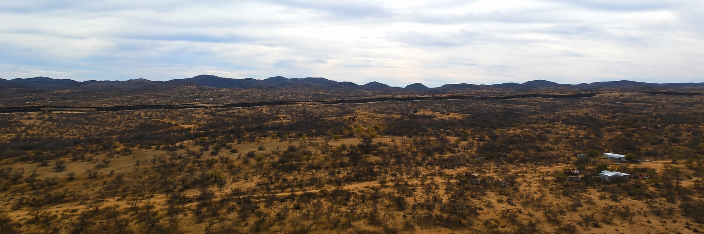
Approximately 453 Acres
Expansive Sonoran Desert landscape with panoramic mountain views.
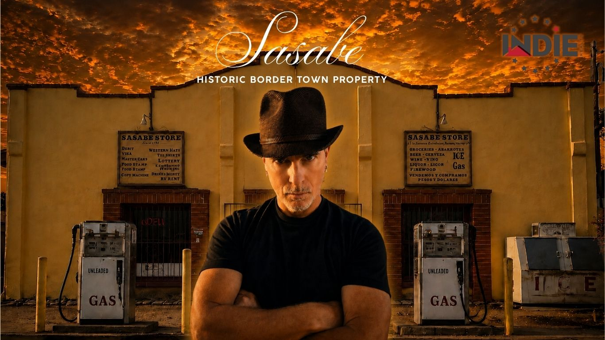
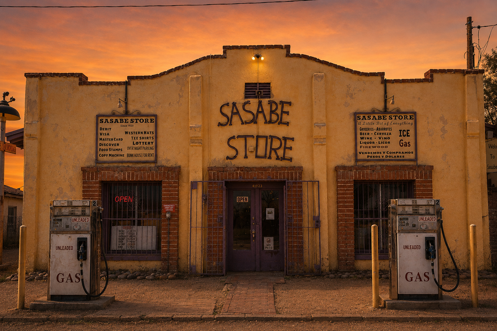
Sasabe is a historic border community located in Southern Arizona at the U.S.–Mexico Port of Entry. For generations, it has served as a crossroads of ranching, commerce, travel, and life along the international border.
Today, this remarkable offering includes approximately 453 acres, the historic Sasabe Store, the local post office, multiple structures, and extensive open land surrounded by the Sonoran Desert and nearby Baboquivari Mountain views.
Properties like Sasabe are exceptionally rare—combining history, infrastructure, location, and opportunity in a way that is difficult to replicate anywhere in the American Southwest.
Established 1920
A rare opportunity to own one of Arizona's most unique historic properties.

Expansive Sonoran Desert landscape with panoramic mountain views.
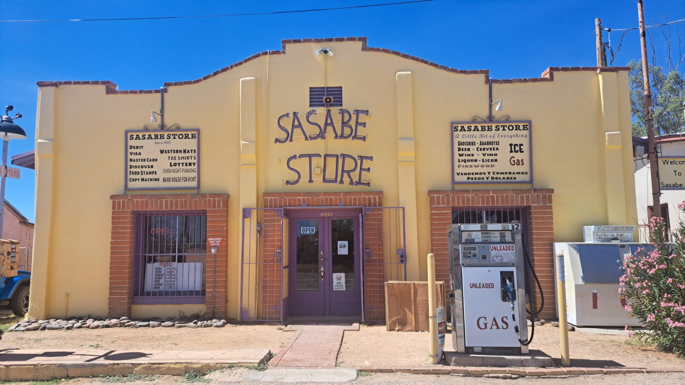
A longstanding landmark and gathering place at the heart of the community.
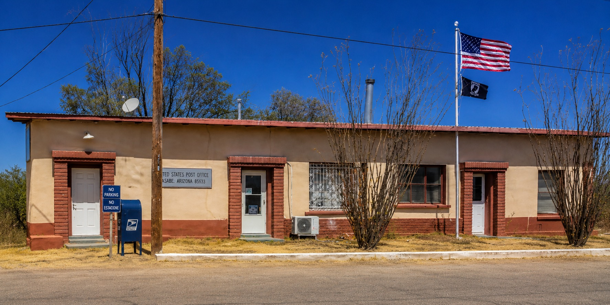
An active and recognizable part of Sasabe's history and daily life.
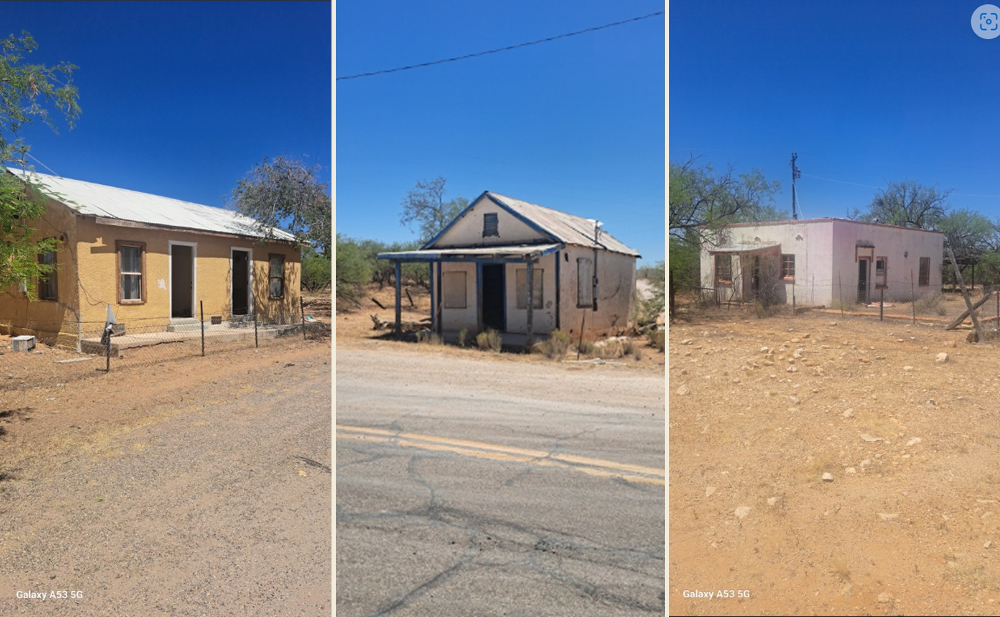
Residential buildings throughout the property.
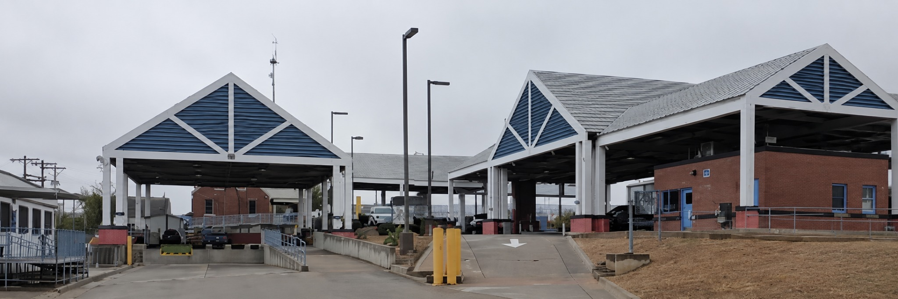
Located at the U.S.–Mexico Port of Entry, a historic crossroads of commerce and travel.
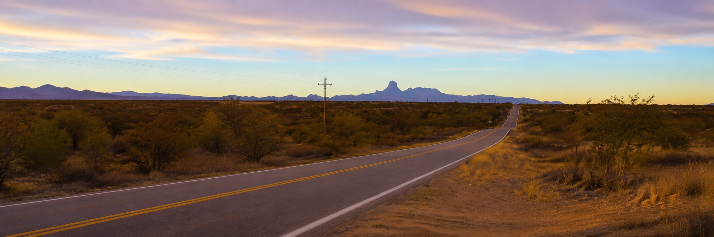
Direct visibility and access along State Route 286.
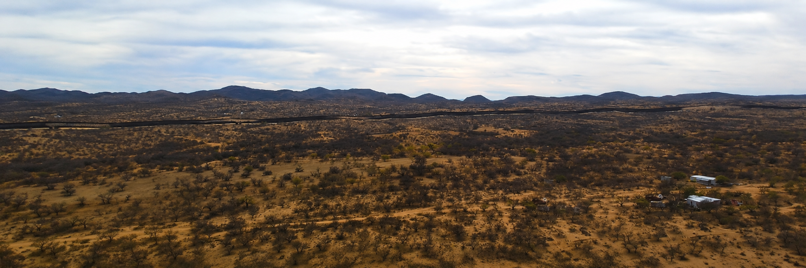
A quick overview of the property
A rare opportunity to shape its next chapter.
The property's unique character invites buyers to imagine a wide range of future possibilities. Any future use or development remains subject to buyer due diligence, applicable zoning, and governmental approvals.
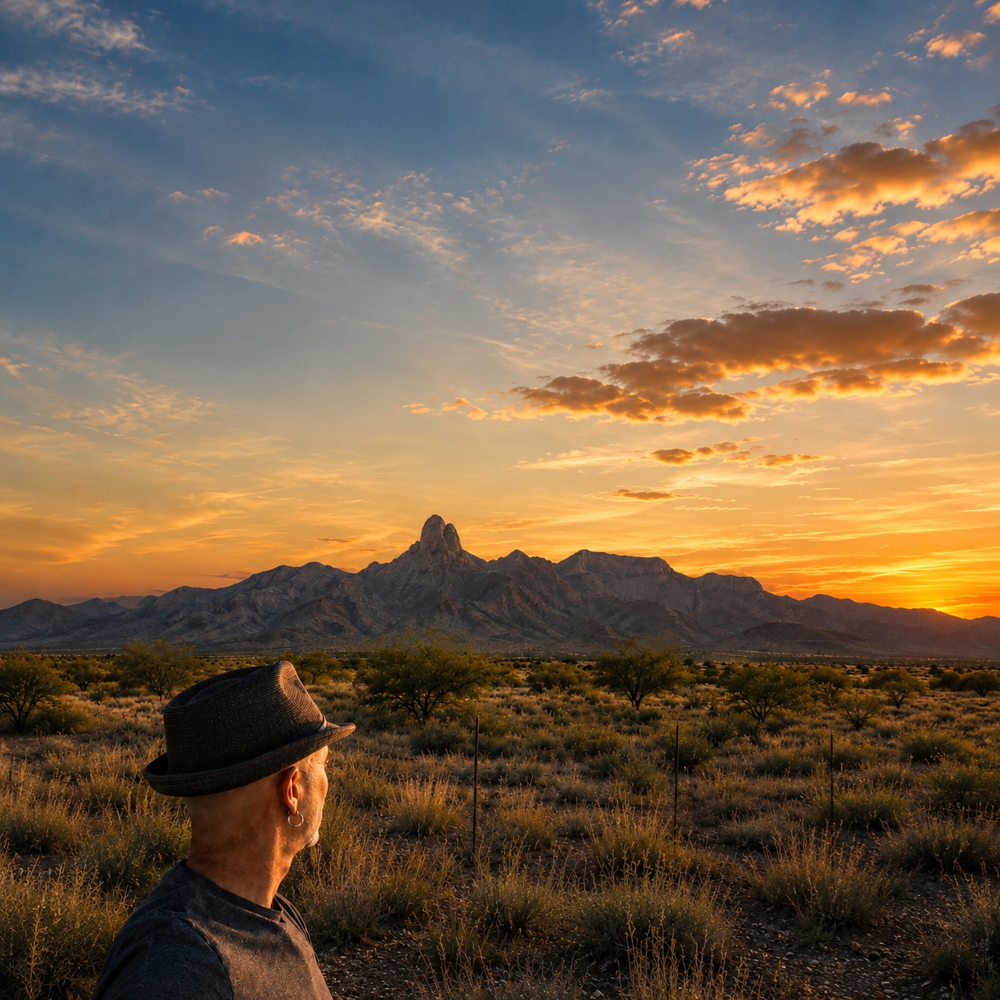
Cinematic Property Tour
Explore the three parcels that make up this rare single offering.
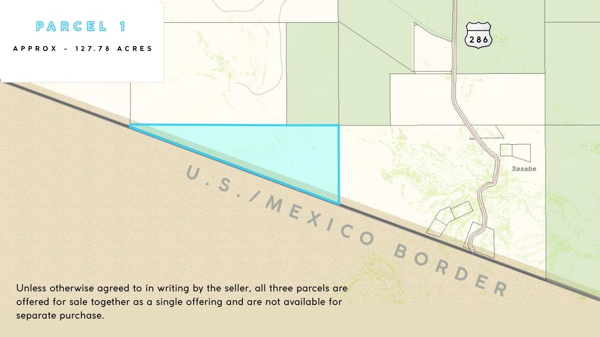
Approx. 127.78 Acres
Located in Southern Arizona at the U.S.–Mexico Port of Entry, Sasabe sits along State Route 286 in one of the most unique border communities in the American Southwest.
Property Disclosures & General Information
Some images on this website have been digitally enhanced or created using artificial intelligence for illustrative and marketing purposes. These images are intended to convey the character and atmosphere of the property and should not be interpreted as representations of current conditions.
All information is believed to be reliable but is not guaranteed. Acreage, dimensions, improvements, utilities, zoning, boundaries, and other property details should be independently verified by prospective buyers.
Any future use, development, subdivision, or redevelopment of the property is subject to buyer due diligence, applicable zoning, governmental approvals, and all local, state, and federal regulations.
Maps, parcel boundaries, aerial imagery, and diagrams are provided for general reference only and may not reflect surveyed boundaries or exact dimensions.
Photographs were taken at various times and may not reflect current conditions. Prospective buyers are encouraged to inspect the property in person.
Historical information presented on this website is based on sources believed to be reliable. Prospective buyers should conduct their own independent research regarding the property's history and significance.
Buyers are strongly encouraged to conduct their own due diligence, including inspections, surveys, and review of all applicable documents and records relevant to the property.
Neither the seller, listing broker, nor any affiliated parties make any representations or warranties, express or implied, as to the accuracy or completeness of the information provided.
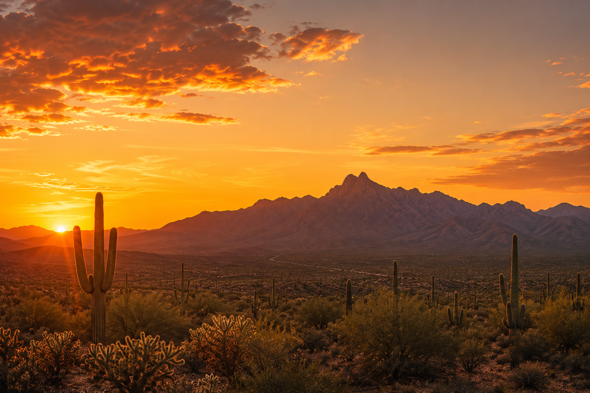
All information deemed reliable but not guaranteed. Buyers should independently verify all information.
Whether you are an investor, developer, or preservationist, I’d be happy to answer your questions and provide additional information about this extraordinary opportunity.
Realtor, Indie Realty
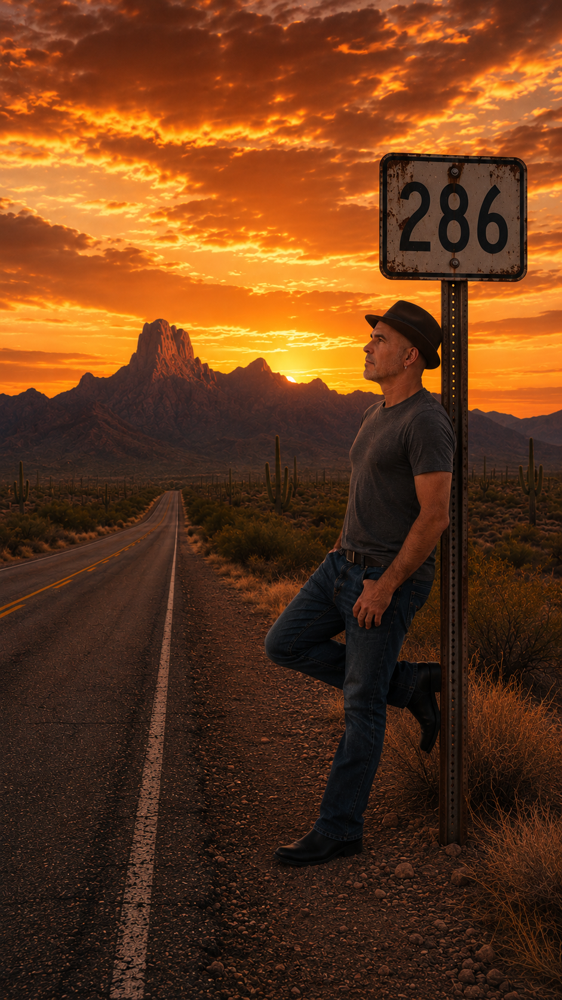